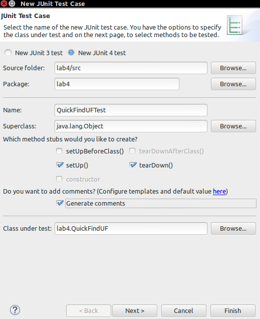

Lab 4 - Union-Find
On competing the lab you will:
- Understand the union find algorithm.
- Develop implementation of the union-find algorithm.
- Create a JUnit test for Union Find algorithms using Eclipse.
- Modify union-find implementation to include path compression.
Eclipse: Implement Union Find
Develop classes QuickFindUF, QuickUnionUF and WeightedQuickUnionUF that implement quick-find, quick-union and weighted quick-union respectively. All classes will have the following API:

Create Eclipse Project
- Create a new project called lab4.
- Create a package called lab4.
Add stdlib jar to the project
- Create a folder called lib in your project folder.
- Download the stdlib-package jar from here and copy to the lib folder.
- Select the jar file, then right click and select Build Path -> Add to Build Path.
Create Class
- Use the following code as a starter. Please refer to the class notes for instruction on how to implement the methods in the following class:
package lab4;
import edu.princeton.cs.introcs.StdIn;
import edu.princeton.cs.introcs.StdOut;
public class QuickFindUF {
private int[] id; // id[i] = component identifier of i
private int count; // number of components
/**
* Initializes an empty union-find data structure with N sites
*/
public QuickFindUF(int N) {
//TODO
}
/**
* Returns the number of components.
*/
public int count() {
//TODO
return 0;
}
/**
* Returns the component identifier for the component containing site p.
*/
public int find(int p) {
//TODO
return 0;
}
/**
* Returns true if the the two sites are in the same component.
*/
public boolean connected(int p, int q) {
//TODO
return false;
}
/**
* Merges the component containing site p with the
* the component containing site q.
*/
public void union(int p, int q) {
//TODO
}
}
Eclipse: Union Find Exercises
You should do the following exercises by hand using paper and pencil. Then, confirm your answer for the id[] array using the result from exercise 1(You can use Eclipse Debugging to view the id[] array values or just print the values to the console). The number of ‘sites’ for each question is 10 (i.e. the size of the id[] array,N = 10)
- Show the contents of the id[] array and the number of components for each input pair when you use quick-find for the sequence: 9-0 3-4 5-8 7-2 2-1 5-7 0-3 4-2.
- Repeat exercise 1, but use quick-union. Draw the forest of trees represented by the id[] array after each input pair is processed.
- Repeat exercise 1, but use weighted quick-union.
Add the following main method to the classes from exercise 1 to check your results:
/**
* Reads in a sequence of pairs of integers (between 0 and N-1) from standard input,
* where each integer represents some site;
* if the sites are in different components, merge the two components
* and print the pair to standard output.
*/
public static void main(String[] args) {
StdOut.println("Enter the number of 'sites':");
int N = StdIn.readInt();
QuickFindUF uf = new QuickFindUF(N);
StdOut.println("Input pairs of integers:");
while (!StdIn.isEmpty()) {
int p = StdIn.readInt();
int q = StdIn.readInt();
if (uf.connected(p, q)) continue;
uf.union(p, q);
StdOut.println(p + " " + q);
StdOut.println(uf.count() + " components");
}
}
Eclipse: Create JUnit Test
In this section of the lab you will create a test case that checks the functionality of the classes you created so far.
Create QuickFindUFTest
- Add JUnit4 to you project path by right clicking on the project and selecting Build Path -> Configure Build Path. In the library tab, select Add Library and select JUnit from the options available. Then, in the JUnit dialog screen, select JUnit4. If you've any difficulty with this please ask your instructor.
- Select the lab4 project in Eclipse and do File -> New -> Junit Test Case. the start the JUnit wizard. Enter QuickFindUFTest as the name and select to create setup() and teardown() method stubs and select next. 
- In the Test Methods step, select all method except the main method as follows:

- Click finish to generate the Junit Test.
Add the Test Code
Add the following private field to the test case:
private QuickFindUF uf;
Find the setup() method in the generated code and add the following code to initialise uf:
uf = new QuickFindUF(10);
For the rest of the generated method stubs, replace the fail("not yet implemented") statement with the following code to test each method:
testQuickFindUF():
for (int i = 0; i < 10; i++) assertSame(i, uf.find(i));
testCount():
assertSame(uf.count(),10);
testFind():
assertSame(0, uf.find(0));
uf.union(0,9);
assertSame(9, uf.find(0));
testConnected():
//test sites not connected
for (int i = 1; i < 10; i++) {
assertFalse(uf.connected(0, i));
}
//test connections
uf.union(0, 1);
uf.union(9, 8);
assertTrue(uf.connected(1, 0));
assertTrue(uf.connected(9, 8));
uf.union(8, 1);
assertTrue(uf.connected(0, 9));
testUnion()
uf.union(0, 1);
uf.union(1, 2);
uf.union(2, 3);
uf.union(3, 4);
assertSame(4, uf.find(0));
assertNotSame(uf.find(0),uf.find(5));
Run the Test
In the Package Explorer view, right click on the QuickFindUFTest and select Run as -> Junit Test. This will run your test case and open the JUnit view with the results. All going well it should look like this:

Now, create tests for the other union find classes (Quick Find, Weighted Quick Find).
Path Compression
Modify QuickUnionUF.java from exercise 1 to include path compression, by adding a loop to find() that links every site on the path from p to the root. Give a sequence of input pairs that causes this method to produce a path of length 4. Remember from Class: the cost per operation for this algorithm is known to be logarithmic.